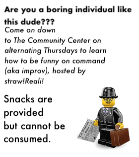

Episode 10: October 31st, 2018
Back to index
Shef Kerbi News Bulletin #10
Our Website
31 October 2018
LETS GET RIGHT INTO THE NEWS
ANNOUNMENT!!
HEY GUYS TODAY IS HELLOWEEN SO HERE'S A PICTURE OF SANS FROM UNDERTALE
OKAY LETS CONTINUE
bREAKING NESW!!!11
Breumhatta's gonna give a speech sometime in the next few days about the proper way to clean everything in your house that's
not a clock. Full speech will show up in the news at some point (although don't expect this to become a regular column) but
you should come down and see it in person if you've got questions.
Breumhatta's also trying to get Keynsun DDDO down to offer some tips from a professional clock cleaner since that's the one
thing Breumhatta doesn't do and Keynsun DDDO is a professional clock cleaner who cleans clocks but nothing's set in stone yet.
(This message not sponsored by Keynsun DDDO's Professional Clock Cleaning Enterprise Extravaganza Company Thing ® ™ Pty. Ltd.)

Clock Cleaning Protips:
- If it's circular, it's a clock.
- If it's not circular, it's still a clock if you clean hard enough.
- You can't clean hard enough.
- Don't clean clocks around twister mats and get cancer.
- Clock dust will probably bring their own twister mats anyway so disregard that.
- If your clock is made of yarn, use a washing machine.
- Washing machines are actually robot aliens sent to hypnotize you and shouldn't be trusted.
- You should probably not risk inhaling clock dust, hypnosis, or your own lack of self-confidence destroying your life and
just hire a professional clock cleaner like Keynsun DDDO, who is me, because I am a clock cleaner.
SKIING NEWS:
Do you like to ski? Well, this news may shock you. A professor at Dreem Lend University recently discovered an undeniable correlation
between skiing and ebola™. Professor Gourd-oh admits that they haven't tested it on enough guinea pigs yet to confirm the connection
and that they wrote the idea down in the middle of the night while sleepwalking, but the fact that "skiing guinea pigs are pretty cool
to be honest" is driving him forward. Some of his assistants backed up this claim, but we were shut down before we could watch for
ourselves. Scientists we have contacted agree that it's about as cute as a hamster tied to a kitten. You can do this experiment at home!
Here's the ingredients for a single test:
1 guinea pig
1 pair of guinea pig skis
1 bag of ebola™
a mountain (not too big, not too small)
a video camera, if you want
COMIC
S
Reali back at it again

Apple is philosphoy man

Weather i guess
So it's gonna be top of 1° today because cold for somehow, min of -7°
Tomorrow it's gonna be a bit of a snowstorm, -2° max and -11° min
Anyway max of 2 and min of -8 WHAT THE [removed] IS UP WITH THESE TEMPERATURE CHANGES
This news has all been 100% quality approved to federal government standards by Shef Kerbi
pls no arrest because we use MS Paint thanks
srsly i'm not going to place the weather after the copyright WHY DID YOU DO THAT
this website is best viewed with Ned's Escape